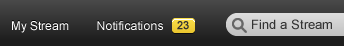
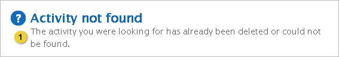

Home > Product Specification > Features > Manage and receive notifications
Manage and receive notifications
Manage system settings
Configure a stream
Overview
Knowledge workers can manage their notifications generated by Eureka, via in app
notifications and/or emails. Group coordinators and Eureka administrators do recieve some
default notifications.
Conditions of Satisfaction
Default Notifications
- The knowledge worker must be able to receive a notification for when an activity is
posted by a colleague to their stream.
- The knowledge worker must be able to receive a notification when a colleague likes an
activity posted by the knowledge worker.
- The knowledge worker must be able to receive a notification for when a comment is posted
to an activity posted by or commented on by the knowledge worker.
- The knowledge worker must be able to receive a notification for when a colleague follows
him.
- The knowledge worker must receive a notification for when access to a private group is
approved or denied.
- The group coordinator must receive a high priority notification for when a pending
membership request is submitted to a private group.
- The group coordinator must receive a high priority notification for when a pending group
request is approved or denied.
- The Eureka administrator must receive a high priority notification for when activity is
flagged as inappropriate.
- The Eureka administrator must receive a high priority notification for when there is a
pending group creation request.
Viewing Notifications
- The knowledge worker must be able to distinguish high priority notifications from normal
notifications
- The knowledge worker must be alerted when high priority notifications are unread
differently than normal unread notifications.
- The knowledge worker must be able to filter notifications by source (stream of app of
notification origin)
- The knowledge worker must be able to see the count of notifications by source
- The knowledge worker must be able to filter between “all” and “unread” notifications
- The knowledge worker must be able to mark all notifications as read
- The knowledge worker must mark a notification individually as read only by clicking it
- The knowledge worker must be able to delete an individual notification
Managing Notifications
- The knowledge worker must be able to unsubscribe to a type of notification from the
notifications window
- The knowledge worker must have the option to receive notifications via email.
- The knowledge worker must have the option to receive notifications in the app.
Notification API
- The Eureka connect developer must be able to send notifications to a particular user
from an exposed API
- The Eureka connect developer must be able to mark a notification being sent as high
priority
User Experience
Viewing Notifications

- Filters on the left allow the user to filter between all notifications or
notifications for a particular stream or app source. Clicking on “Stream” or
“Apps” will show all notifications in those sub groups.
- Notifications can be filtered to show all or unread notifications. Read
notifications are show as darker in color (in picture above, the third
notification is “read”). High Priority notifications are always sorted to the
top. A notification is only marked as read if it is clicked or the mark all as
read button is clicked (more details below).
- Lets the user mark all notifications in the current view as “read”
- Switches the Modal to the config view (see below)
- A notification itself. The icon shows is the avatar of the person or group generating the notification. A “system” and “app” icon will be used for when the Admin or an app through the API sends a notification. Clicking the notification takes the user to the notification’s target. Hovering brings up the two options shown.
- Hovering over the delete icon expands it with a tool tip. Clicking it deletes the notification
- Hovering over the stop icon expands in the same fashion with the text “Stop Notifications Like This”. Clicking it unchecks both In App and Email settings for that notification type. This icon does not appear on notifications the user can not unsubscribe to.
- High-Priority notifications are always sorted to the top regardless of date and have a red bar to distinguish them.
Managing Notifications

- Allows the user to go back to the previous view.
- Checking the boxes allow the user to control how they want to receive notifications.
- Clicking Save Changes persists the changes the user has made with the check boxes.
Notes:
- Notifications are retained for 14 days.
- A single notification is generated based on any given event. The type of message sent is picked based on the following order: 1) Authorship, 2) Who’s stream is updated; 3) scenario for commenting. For example, in the scenario where a knowledge worker posts a message to his stream and comments on his message, the knowledge worker would receive message #2 instead of message #4 since the original message was generated by the knowledge worker.
Notification Icon

- The notification icon in the top bar. The count badge only appears when there aren’t any unread notifications. When there are unread notifications the badge appears with the count.
Email Notifications

- Email is sent to a knowledge worker when a message is posted to your stream. The word ‘message’ is replaced with ‘link’ when a link is posted and the link name is displayed after the message in blue. Refer to #6 for an example.
Notes:
- A single email is generated based on any given event. The type of message sent is picked based on the following order: 1) Authorship, 2) Who’s stream is updated; 3) scenario for commenting. For example, in the scenario where a knowledge worker posts a message to his stream and comments on his message, the knowledge worker would receive message #2 instead of message #4 since the original message was generated by the knowledge worker.

- Footer is the same for all emails.
Activity Not Found Message

- This message is displayed when the activity hyperlinked in a notification or email no longer exists.
Test Plans
Testing Notes
When executing notification testing:
- when the in-app option is enabled, the in-app notification count will always increase by one when a notification is received
- Always check the content of the in-app and email notifications to ensure the content within the notification corresponds to the action which generated the notification.
Default Notifications
- The knowledge worker must be able to receive a notification when an activity is posted
by a colleague to their stream.
- Verify the ability to enable the in-app and email options for, Someone posts on my stream
- When a colleague posts to your stream, verify the in-app and email notifications are received
- Verify the ability to disable the in-app and email options for, Someone posts on my stream
- When a colleague posts to your stream, verify the in-app and email notifications are not received
- The knowledge worker must be able to receive a notification for when a colleague likes
an activity posted by the knowledge worker
- Verify the ability to enable the in-app and email notification for, Someone likes one of my posts
- When someone likes one of your posts, verify the in-app and email notifications are received
- Verify the ability to disable the in-app and email notification for, Someone likes one of my posts
- When someone likes one of your posts, verify the in-app and email notifications are not received
- The knowledge worker must be able to receive a notification when a comment is posted to
an activity posted by the knowledge worker or an activity the knowledge worker has commented on.
- Verify the ability to enable the in-app and email notification for, Someone comments on one of my posts or a post I’ve commented on
- When someone comments on one of your posts, verify the in-app and email notifications are received
- When someone comments on a post you have commented on,verify the in-app and email notifications are received
- Verify the ability to disable the in-app and email notification for, Someone comments on one of my posts or a post I’ve commented on
- When someone comments on one of your posts, verify the in-app and email notifications are not received
- When someone comments on a post you have commented on,verify the in-app and email notifications are not received
- The knowledge worker must be able to receive a notification for when a colleague
follows him.
- Verify the ability to enable the in-app and email notifications for, Someone follows my stream or a group I coordinate
- When someone follows your personal stream, verify the in-app and email notifications are received.
- Verify the ability to disable the in-app and email notifications for, Someone follows my stream
- When someone follows your personal stream, verify the in-app and email notifications are not received
- The knowledge worker must be able to receive a notification for when a colleague
follows a stream he coordinates.
- Verify the ability to enable the in-app and email notifications for, Someone follows a group I coordinate
- When someone follows a stream that you coordinate, verify the in-app and email notifications are received
- Verify the ability to disable the in-app and email notifications for, Someone follows a group I coordinate
- When someone follows a stream that you coordinate, verify the in-app and email notifications are not received
- The knowledge worker must receive a notification for when access to a private group is
approved or denied.
- When access to a private group is approved, verify an in-app and email notification are received
- When access to a private group is denied, verify an in-app and email notification are received
- The group coordinator must receive a notification for when a pending membership request
is submitted to a private group.
- When access to a private group is requested, verify an in-app and email notification is received
- The group coordinator must receive a high priority notification for when a pending
group request is approved or denied.
- When a pending group request has been approved, verify the Group Coordinator receives a high priority in-app and email notification
- When a pending group request has been denied, verify the Group Coordinator receives a high priority in-app and email notification
- The Eureka administrator must receive a high priority notification when activity is
flagged as inappropriate.
- When an activity is flagged as in appropriate, verify a high priority in-app and email notification is received.
- The Eureka administrator must receive a high priority notification for when there is a
pending group creation request.
- When a public group creation request has been submitted, verify a high priority in-app notification and email is received.
- When a private group creation request has been submitted, verify a high priority in-app notification and email is received.
Viewing Notifications
- The knowledge worker must be able to distinguish high priority notifications from
normal notifications
- Verify that high priority notifications are displayed at the top of the list
- Verify that high priority notifications are indicated with red bars
- The knowledge worker must be alerted when high priority notifications are unread
differently than normal unread notifications.
- Verify when marking all as “read”, high priority notifications are included in this action
- Verify that clicking on a high priority notification marks it as read
- The knowledge worker must be able to filter notifications by source (stream of app of
notification origin)
- Verify the ability to filter by All, Streams (All) and Apps (All)
- Verify the ability to filter notifications associated with a specific app
- Verify the ability to filter notifications associated with a specific stream
- Verify the filters for specific streams and apps only appear if there is a notification associated with them
- The knowledge worker must be able to see the count of notifications by source
- Verify the count is displayed to each source
- Verify the count at the Streams and apps level is a roll up of the total number of notifications within each
- The knowledge worker must be able to view only high priority notifications
- Verify the ability to view only high priority notifications
- The knowledge worker must be able to filter between all and unread notifications
- Verify the ability to view only unread notifications
- Verify the ability to view all notifications
- The knowledge worker must be able to mark all notifications as read
- Verify the ability to mark all notifications as read within the All view
- Verify the ability to mark all notifications as read within the Unread view
- The knowledge worker must mark a notification individually as read only by clicking
it
- Verify the ability to mark a notification as read by clicking on the notification
- The knowledge worker must be able to delete an individual notification
- Verify the ability to delete a read notification by clicking on the Delete Notification option
- Verify the ability to delete an unread notification by clicking on the Delete Notification option
Managing Notifications
- The knowledge worker must be able to unsubscribe to a type of notification from the
notifications window
- Verify the ability to unsubscribe from both in-app and email notifications from the notification window in the following situations:
- Someone posts on my stream
- Someone likes one of my posts
- Someone comments on one of my posts or a post I’ve commented on
- Someone follows my stream or a group I coordinate
- The knowledge worker must have the option to receive notifications via email.
- The knowledge worker must have the option to receive notifications in the app.
Notification API
- The Eureka connect developer must be able to send notifications to a particular user
from an exposed API
- The Eureka connect developer must be able to mark a notification being sent as high
priority
| PAGE CONTENTS
Version 1.5
Documentation is also available for all of the following versions:
0.9 | 1.0 | 1.1 | 2.0
|